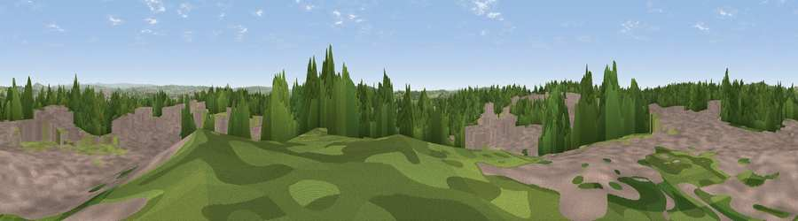

Viewpoint near Keele
#16158 in England · top 21% of its area beats it · near KeeleWhere it is
The exact computed spot (SJ 82125 45275). Click the marker for map links.
The view, rendered

A 360° render of this exact spot computed from the terrain model, tree cover and land cover — summer colours, afternoon light, calibrated against photographs of famous viewpoints. Real trees, hedges and buildings will differ in detail.
The panorama
Grey silhouette: terrain skyline in each direction (720 bearings, Earth curvature and refraction included). Dashed green: skyline with trees (+15 m) and buildings (+8 m) as obstacles. Blue strip: how far the ground is visible on each bearing.
Where the view opens
Wedge length = distance to the farthest visible ground on that bearing (vegetation-aware). Rings at 10, 25 and 50 km.
What fills the view
36% woodland · 31% grassland · 30% built-up · 3% cropland
Angular shares of the visible panorama (visual magnitude), not map area. Landscape diversity 0.53 (0–1 Shannon).
Key numbers
More beautiful places nearby
The staircase of upgrades: each row has a higher view potential than everything closer. Driving times are estimates from straight-line distance, calibrated against real road routing — check an actual route before setting out.
| Place | Direction | Drive | Score |
|---|---|---|---|
| Viewpoint near Madeley Heath | NW · 3 km | ~8 min | 65.4 |
| Bignall Hill | N · 6 km | ~13 min | 75.2 |
| Viewpoint near Mow Cop | NNE · 13 km | ~23 min | 80.2 |
| Viewpoint near Harthill | WNW · 32 km | ~50 min | 80.5 |
| Viewpoint near Little Wenlock | SSW · 41 km | ~61 min | 84.2 |
| The Wrekin | SSW · 42 km | ~62 min | 85.0 |
| Viewpoint near Little Wenlock | SSW · 42 km | ~62 min | 86.6 |
| North Hill | S · 99 km | ~124 min | 86.8 |
53.00449, -2.26782 · source: screening · position refined by local search. Computed location — check access rights before visiting.